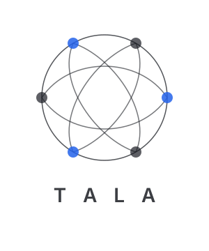

Intent-Native Narrative Execution Layer
Remember the why.
Run history on any machine. A flat list of commands, numbered sequentially, stripped of all context.
No record of what you were trying to accomplish. No link between the grep that found the bug
and the git commit that fixed it. Fifty years of Unix, and the best we have is an append-only text file.
Commands are captured. Intent is lost.
TALA reimagines shell history as a causality-aware, graph-structured narrative of intent.
Every action becomes a node in a directed acyclic graph — linked to what caused it, what it depended on,
what it produced, and how confident the system is in the outcome.
Intent becomes a first-class OS primitive: I = f(C, X, P).
Intent extraction, embedding, graph construction, causal edge formation
Topological plan building, variable substitution, idempotent re-execution
Pattern detection, failure clustering, prediction, narrative summarization